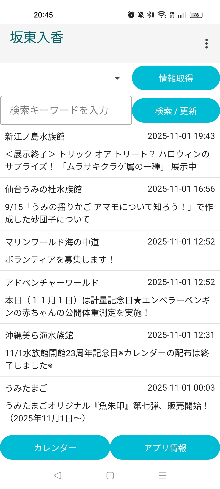
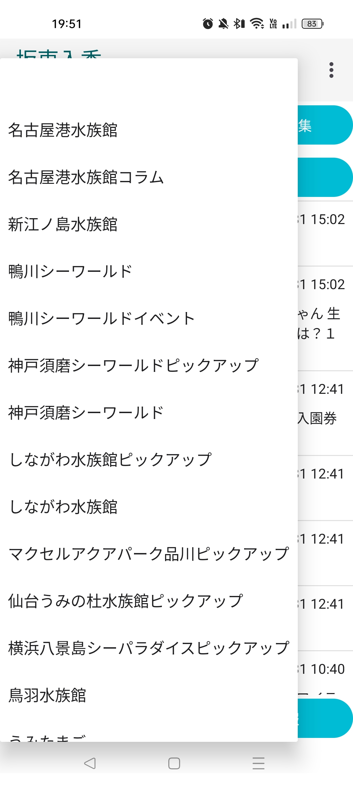
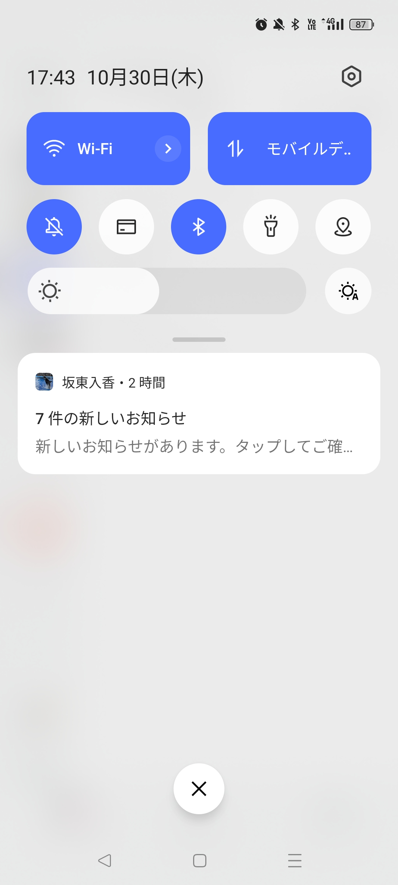

新着情報・更新履歴
- 2025-02-21: ver. 1.3.8 をリリースしました
- 2025-02-13: ver. 1.3.5 をリリースしました
- 2025-12-29: ver. 1.3.0 をリリースしました
- 2025-12-15: ver. 1.2.14 をリリースしました
- 2025-11-07: ver. 1.2.12 をリリースしました
- 2025-11-01: ver. 1.2.8 をリリースしました
- 2025-10-30: ver. 1.2.6 をリリースしました
- 2025-10-07: サイトを公開しました
- 2025-10-07: ver. 1.2.1 をリリースしました
アプリの詳細
アプリの機能と特徴
- 水族館のお知らせ、ブログ記事の更新情報をスクレイピングし、最新記事を一覧表示します。
- 動物たちの記念日や水族館の休館日を表示するカレンダー機能を提供します。
- キーワードは、一次情報、ローデータ、リアルタイム性です。最新の情報を瞬時に取得します。
使用上の注意事項
- 本アプリは Android アプリです。iPhone では動作しません。
- Android バージョンが 9 以上でないと動作しません。対応 Android バージョンは引き上げを予定しています。
今後のシステム
ユーザーの嗜好に最適化された提案を行う仕掛けを開発しています。リリースの有無、時期は未定です。
詳しくは、こちらの資料 (IrukaBandoApp_Suggetion.pdf) をご覧ください
豆知識の正確性の向上や内容の拡充、スクレイピング対応水族館の拡充、リファクタリングなども適宜行っています。
スクリーンショット / 利用イメージ
本アプリの仕様は今後変わることがあります。あくまでもイメージとしてご覧ください。
お知らせの一覧表示
お知らせを SNS のタイムラインのように一覧表示が可能です。
お知らせの検索
お知らせを検索することもできます。検索キーワードが部分一致するお知らせを表示します。

水族館のお知らせを絞り込み
表示したい水族館を選択し、表示させたい水族館を絞り込むことができます
お知らせの詳細情報にアクセス
お知らせをタップすると、情報源の Web ページにアクセスすることができます
バックグラウンド処理と通知
新たなお知らせを定期的に通知します
お知らせの通知間隔は変更可能です
イベントのマンスリービュー
マンスリービューでイベントを表示できます

カレンダーへのイベントの追加
イベントを追加できます
水族館に関する予定に特化した入力項目となっています

イベント詳細の確認
追加したイベントの詳細を確認できます

本日の豆知識
豆知識を1日1つランダムで表示します
AI で生成しているため、情報が不正確な場合がありますことをご承知おきください

アプリ紹介動画（準備中）
よくある質問 (FAQ)
1. アプリの概要とご利用について
- Q: アプリの利用に費用はかかりますか？広告はありますか？
-
A: 完全無料です。Android ユーザーであればどなたでもダウンロードいただけます。
また、現在のところ広告を表示する予定はありません。 - Q: ログインや会員登録は必要ですか？
- A: 必要ありません。インストールしてすぐにご利用いただけます。
- Q: どの水族館の情報を見ることができますか？ 海外にも対応していますか？
-
A: 現在、国内の35館に対応しており、今後も順次拡充予定です。
具体的な対応館は、インストール後、お知らせの絞り込みメニューにてご確認いただけます。現在は日本の主要な園館を対象としていますが、要望が多ければ将来的に海外対応も検討いたします。 - Q: iPhone 版はありますか？
-
A: 現在、iPhone 版の開発予定はありません。
開発者に iPhone ユーザーがいないためテストができないことや、個人開発におけるメンテナンスの負担が主な理由です。 - Q: なぜ「坂東入香」という名前なのですか？
- A: 開発者のハンドルネームです。水族館や動物への愛着を込めて活動しています。
2. インストール・更新・権限について
- Q: インストール時に「有害なアプリ」などの警告が出ます。
-
A: 本アプリは Google Play ストア経由ではなく APK 直接配布という形式をとっているため、Android システムが警告を表示することがあります。
安心してご利用いただけるよう、ご希望の方にはソースコードを公開しております。コードの確認を希望される場合は、GitHub のプライベートリポジトリへ招待いたしますので、お気軽にお問い合わせください。 - Q: アプリの更新（アップデート）はどうすればいいですか？
-
A: 自動アップデート機能は実装しておりません。新しい APK ファイルをダウンロードし、ご自身で実行してアップデートしてください。
更新情報は「開発者から」のお知らせとして配信しますので，タイムラインをご確認ください。なお、インストール完了後は APK ファイル自体を削除してもアプリは動作します。 - Q: 通知やストレージへのアクセス許可は何に使いますか？
-
A: 「通知」は自動更新で新たなお知らせを取得した際、ユーザーへ通知するために使用します。
「ストレージ」は、データベースのエクスポート・インポート（バックアップ）機能のために使用します。
3. データの取り扱いとプライバシー
- Q: カレンダーの予定や個人情報は開発者に見られますか？
-
A: いいえ、公開されません。データはユーザーの端末内（ローカル）にのみ保存され、外部サーバーへ送信されることはありません。
- Q: 機種変更時のデータ引き継ぎやクラウド同期はできますか？
-
A: クラウド同期機能はありませんが、データベースのエクスポート・インポート機能を実装しています。
古い端末で書き出したファイルを、新しい端末で読み込ませることで引き継ぎが可能です。アプリを削除するとデータも消去されるため、事前にバックアップを行ってください。
4. 機能と情報の正確性について
- Q: 掲載されている情報は公式のものですか？
-
A: 各公式サイトから情報を取得していますが、反映にタイムラグが生じる場合があります。
重要な情報については、必ず各館の公式サイトにて確認を行ってください。また、特定館がスクレイピングされない場合はサイト仕様変更の可能性があるため、ご連絡いただけると助かります。 - Q: 「本日の豆知識」の根拠は何ですか？ 内容が違う気がします。
- A: 豆知識は汎用的な AI モデルが学習した知識に基づき生成されています。特定の論文を引用しているわけではなく、不正確な情報が含まれる場合もあります。学術的な用途ではなく、あくまで読み物としてお楽しみください。
- Q: 通知の設定（オン/オフや頻度）は変更できますか？
- A: はい、設定画面から通知のオフや、情報を取得する間隔（バックグラウンド処理・スクレイピング処理ん間隔）を調整いただけます。
- Q: 過去のお知らせはいつまでも遡れますか？
-
A: 通常はパフォーマンス向上のため、直近2か月分を表示します。
ただし、キーワードや水族館で「絞り込み」を行っている間は、条件に合うすべてのお知らせを表示します。
5. トラブルシューティング・ご要望
- Q: 通知が届きません。
-
A: Android システムの「通知の許可」「バッテリー最適化の無効化」「バックグラウンドアクティビティの許可」が必要です。
設定方法は機種によりますが、基本的には「設定」または「アプリ長押し ＞ アプリ情報」から変更いただけます。 - Q: アプリが起動しない、または頻繁に終了します。
- A: Android 9 以降であるかをご確認ください。また、メモリ不足の可能性があるため、他のアプリを閉じてから再試行してください。改善しない場合は、環境（Android バージョン等）および事象が発生した際の操作を開発者へご連絡ください。
- Q: バグ報告やリクエスト（追加してほしい水族館など）はどこへ？
-
A: GitHub の Issues、もしくは開発者の X (@sendaiperson) までお気軽にお送りください。
技術的に可能なサイトであれば、積極的に対応させていただきます。
開発者・お問い合わせ
開発者情報
開発協力: しゃち (X: @Orca_Earth_)
お問い合わせ
- irukabando [at] gmail.com
- X (@sendaiperson)
- Issues - GitHub